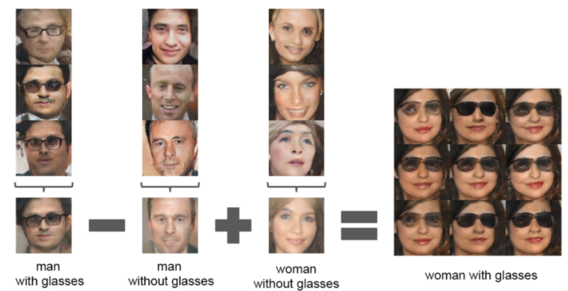
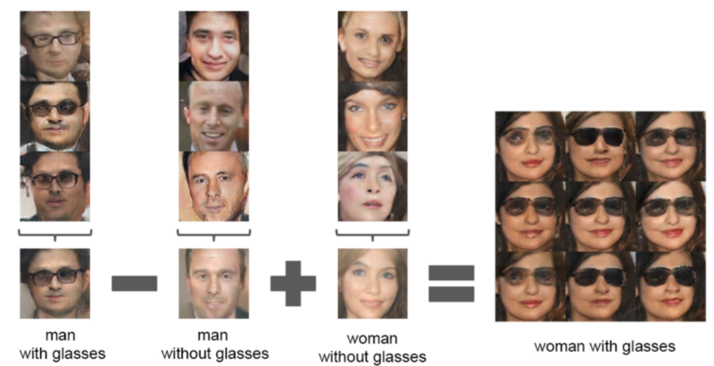

Reinforcment Learning
Uploaded on Dec. 10th, 2018
Introduction
In my opinion, reinforcement learning is the most interesting field in artificial intelligence. In concept, reinforcement learning is fairly simple. It works on a reward system, rewarding the model when it does something correct and punishing it when it does something wrong. Reinforcement learning is used to find the ideal solution, maximizing the reward the model is receiving. Imagine the following example: you are standing in front of a massive hedge maze. Every time you reach a dead end, you are forced to start again. Imagine that everytime you make a correct turn, you receive $10, but every time you make a wrong turn, you loose $20. As a result, you will learn the optimal way to traverse the maze while maximizing the money you gain. In the following post, I will detail how reinforcement learning algorithms are used and a specific form of reinforcement learning: Q-Learning.
Q Learning
Q-Learning finds an optimal solution in the sense that it maximizes the total reward over n successive steps, starting from the current state. Q-Learning can find the optimal actions based on any given finite Markov Decision Process, given infinite exploration time. In other words, Q-Learning is theoretically able to find the solution to any finite amount of choices. It’s goal is to maximize its total (future) reward. There are many applications of Q-Learning, my favorite being the deep Q Learning methods used in Mario-AI. The algorithm uses raw pixel sequences and saves them into memory and trains on them later, where “training” means to accurately predict the expected action-reward values based on collected memories. When the memory starts to get full (default size of 250k entries), new entries start to replace older ones. For training data, batches, examples are chosen randomly and rewards of memories are re-estimated based on what the network has learned so far. After tons of math, dropout, ReLu, the model is finally able to play the game in the most optimized way possible. You can visit Aleju’s GitHub repository (https://github.com/aleju/mario-ai) to learn more about his implementation.
Conclusion
Reinforcement Learning is being used by cutting edge researchers to help developed artificial general intelligence (AGI). OpenAI are at the forefront of this development (their research can be found here: https://openai.com/research/#publications) and are using various methods of reinforcement learning to train advanced models. Overall, there are many applications of Reinforcement Learning are seemingly infinite and will shape AI in the near-future.
 
